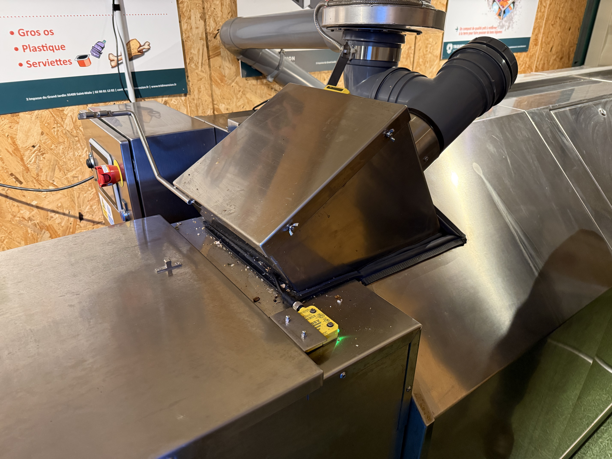
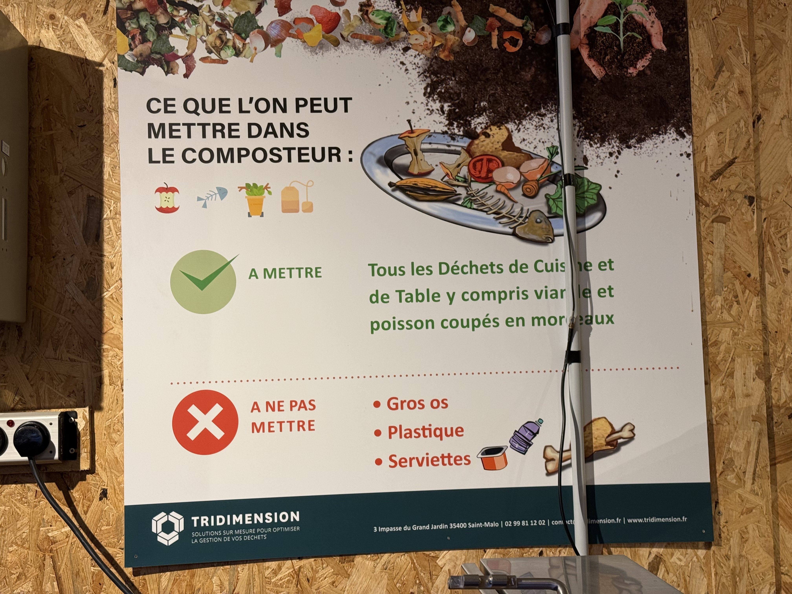
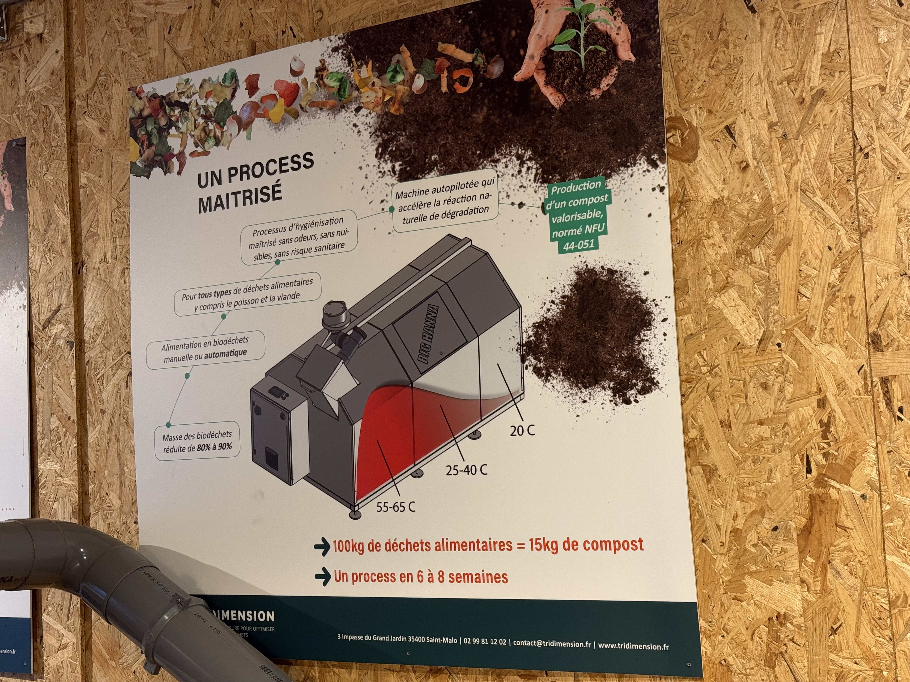

Plateforme pour superviser la production et consommation électrique solaire de l'UMC, en partenariat avec TRIDIMENSION.
Depuis juin 2020, la société TRIDIMENSION a installé gracieusement dans l’enceinte du lycée Maupertuis une Unité Mobile de Compostage unique en France. La convention établie entre le lycée et Tridimension assure un partenariat de deux ans (prolongé depuis) entre les parties concernées. Cette UMC est composée d’un composteur électromécanique et de son biofiltre contenus dans un conteneur maritime. Elle permet de valoriser les biodéchets du lycée en un compost de qualité.




Le partenariat avec le lycée Maupertuis a permis à l’entreprise TRIDIMENSION de valider le modèle et la faisabilité technique de l’Unité Mobile de Compostage. Le procédé biologique a, lui aussi, été validé avec la production d’un compost de qualité. L’outil sert désormais de site pilote de projets solaires . Afin de rendre le module totalement autonome et de plus mobile, les étudiants de BTS Electrotechnique ont implanté sur le conteneur une unité de production photovoltaïque.
L'objectif principal est de permettre un suivi de la production et de la consommation électrique de la plateforme UMC implantée dans un conteneur afin de valider sa rentabilité. Cette unité s'appuie sur des panneaux solaires associés à un onduleur, un régulateur et des batteries pour rendre l'unité mobile de compostage complètement autonome en énergie. Sur ce site, vous allez pouvoir observer et télécharger les données en temps réel et ponctuelles de l'onduleur et les batteries.
TRIDIMENSION est une structure spécialisée dans l'ingénierie et les solutions innovantes liées à la gestion des déchets et à l'économie circulaire. Située au 3 impasse du Grand Jardin, 35400 Saint-Malo, elle accompagne les collectivités et entreprises dans leur transition écologique.
Visiter tridimension.fr ↗